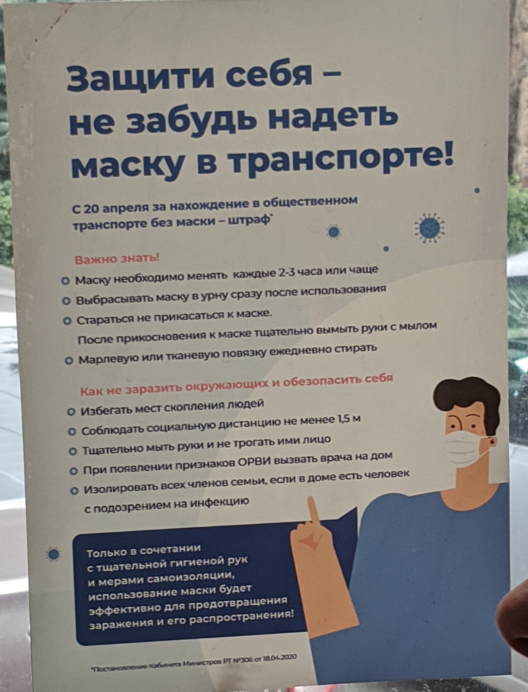
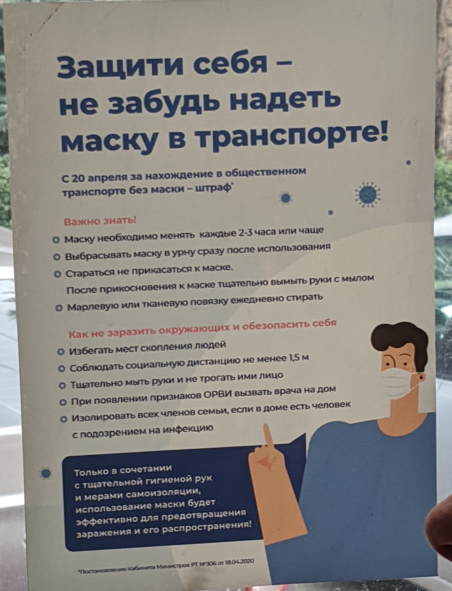

прописные нужно разрежать, строчные нельзя разрежать, вертикальные штрихи строчных и прописных должны стоять через равные промежутки, разрядка прописных должна быть меньше интерлиньяжа, пробел между строками прописных букв не может быть меньше высоты буквы, интерлиньяж должен быть больше межсловных пробелов, при минимальном интерлиньяже нижние выносные элементы верхней строки почти касаются верхних выносных элементов следующей строки, чем длиннее строка, тем больше интерлиньяж, интерлиньяж не должен быть больше внешних полей, элементы списка должны иметь между собой дополнительный отступ больше интерлиньяжа, номер страницы должен стоять ближе к полосе, чем к краю страницы, заголовок в тексте должен стоять ближе к следующему абзацу, чем к предыдущему, расстояние от заголовка до абзаца не должно быть меньше межстрочного интервала заголовка…
На ощущение от вёрстки решительно влияет соотношение верхнего и бокового полей. Одинаковые вертикальные и горизонтальные поля — признак слабой, любительской, невнимательной вёрстки.
Пропорции полей могут быть математически связаны с пропорциями формата или даже букв используемого шрифта, могут быть вытянуты на глаз в ширину или в высоту.
Добавление плашки, линейки или рамки создаёт новый формат с собственным содержанием и пропорциями полей. Вертикальные и горизонтальные поля не должны быть равны друг другу, причём нижнее поле должно быть больше.
Расстояния вокруг горизонтальной границы модулей не могут быть равны: например отступы над и под плашкой.
II. Формат и поля
На ощущение от вёрстки решительно влияет соотношение верхнего и бокового полей. Одинаковые вертикальные и горизонтальные поля — признак слабой, любительской, невнимательной вёрстки.
Пропорции полей могут быть математически связаны с пропорциями формата или даже букв используемого шрифта, могут быть вытянуты на глаз в ширину или в высоту.
Добавление плашки, линейки или рамки создаёт новый формат с собственным содержанием и пропорциями полей. Вертикальные и горизонтальные поля не должны быть равны друг другу, причём нижнее поле должно быть больше.
Расстояния вокруг горизонтальной границы модулей не могут быть равны: например отступы над и под плашкой.
Якорные объекты (точки) — это самые заметные объекты на странице: иллюстрации, заголовки, фактоиды, логотипы и пиктограммы. Простой абзац наборного текста тоже выступает якорным объектом, если он окружён пустотой, или контрпространством. Точки могут выстраиваться в линии.
Прямоугольник — базовая фигура модульной вёрстки. Все модули макета должны иметь прямоугольную форму и составлять вместе общий прямоугольник страницы или экрана, которым они ограничены.
Любой якорный объект должен тяготеть или располагаться в одном из углов или в визуальном центре своего прямоугольника. Линии лучше привязывать к сторонам.
Если у вас свой небольшой бизнес, не нужно создавать отдельный рабочий аккаунт.
Показывайте не только работы, но и лица и бытовуху. Сухие экспертные посты нужны, но неинтересны.
Не бойтесь, если в начале пути ваши соцсети могут выглядеть некрасиво/глупо/скучно, сконцентрируйтесь на пользе и развивайтесь. Люди начинают ходить на танцы, тренинги, растяжки, чтобы их лента смотрелась интересна. Компании создают уникальные интерьеры для красивых фоток.
Формируем одно сообщение типа: «Привет, меня зовут Михаил, я делаю свой первый курс про SMM. Хочу сделать небольшую часовую съемку, но, т.к. ограничен в бюджете, хочу предложить посотрудничать по бартеру. Могу отметить тебя на каждом фото, порекомендовать своим клиентам и подарить тебе запись своего вебинара. Мой инст/группа *****. Что думаешь по поводу такого предложения?»
Если откажется, спросите почему. Предложите 500—1000 ₽
Как найти моделей
Просите своих друзей найти вам красивых парней/девушек
Ловите людей на улице, в магазинах, официанток и т.д.
Ищите в инстаграме по хештегам своего города и пишите в директ
Попросите фотографа ещё пару раз щёлкнуть вас.
Как фотографировать самим
Протрите камеру
Протрите предметы в кадре
Следите, достаточно ли света
Если нет опыта — пользуйтесь правилом третей
Соблюдайте баланс объектов в кадре
Если нет портретного режима, держите телефон горизонтально и снимайте в режиме «Квадрат»
Не снимайте близко к модели, не заваливайте ей голову


 



 Facetune2
Facetune2
 YouCam Perfect
YouCam Perfect Peachy
Peachy

 AppForType
AppForType
 Текст на фото
Текст на фото
 Фонтмания
Фонтмания


 InShot
InShot
 mojo
mojo
 Magisto
Magisto